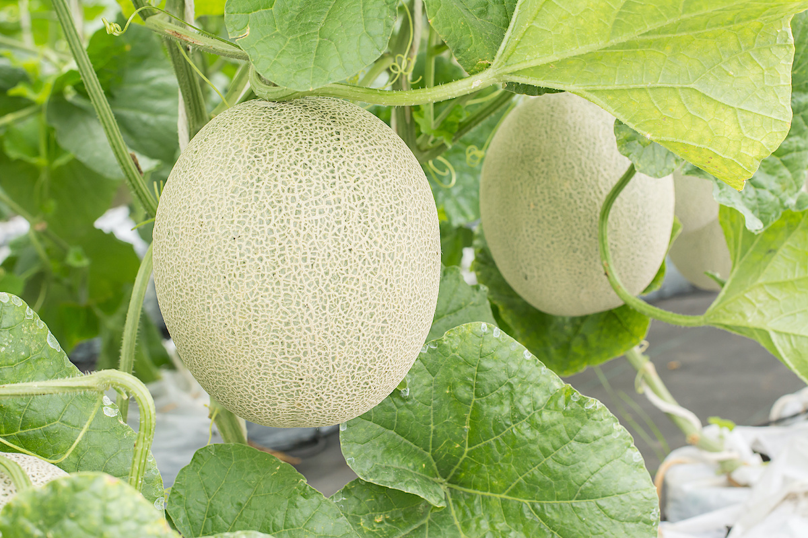

Melons are sweet and juicy fruits belonging to the Cucurbitaceae family. Popular varieties include watermelon, cantaloupe, and honeydew. They contain over 90% water, making them refreshing and ideal for hot climates.
Melons require warm temperatures and plenty of sunlight to grow well. Summer conditions help improve sweetness, size, and overall fruit quality. Cold weather can slow growth and reduce yield.
Melons have high market demand, good profitability, and fast growth. They are nutritious, easy to cultivate, and suitable for large-scale farming.
| Factor | Requirement |
|---|---|
| Best Season | Summer |
| Soil Type | Well-drained sandy loam |
| Temperature | 20°C – 35°C |
| Water Requirement | Moderate |
| Sunlight | Full sunlight |
| Harvest Time | 70–90 days |